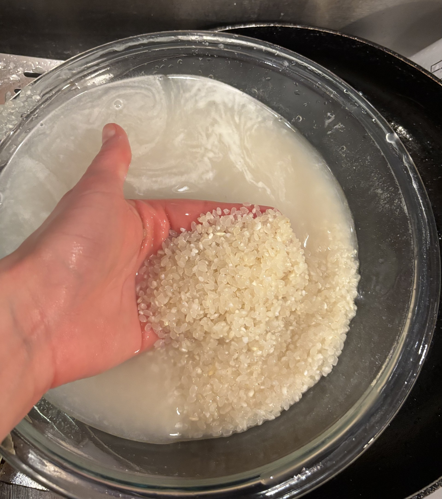
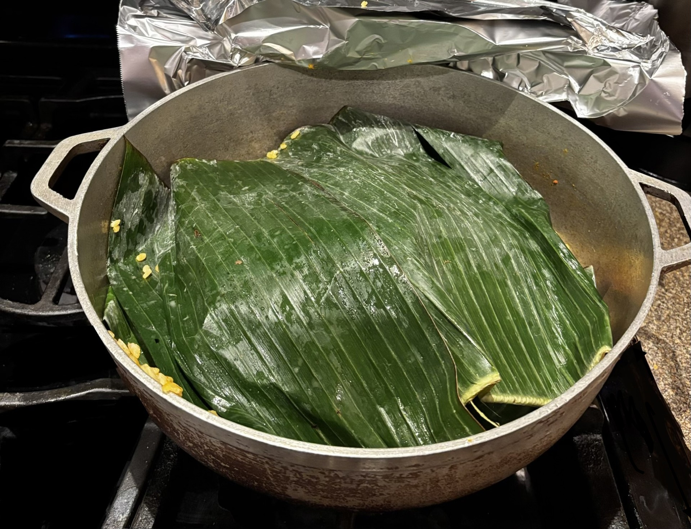
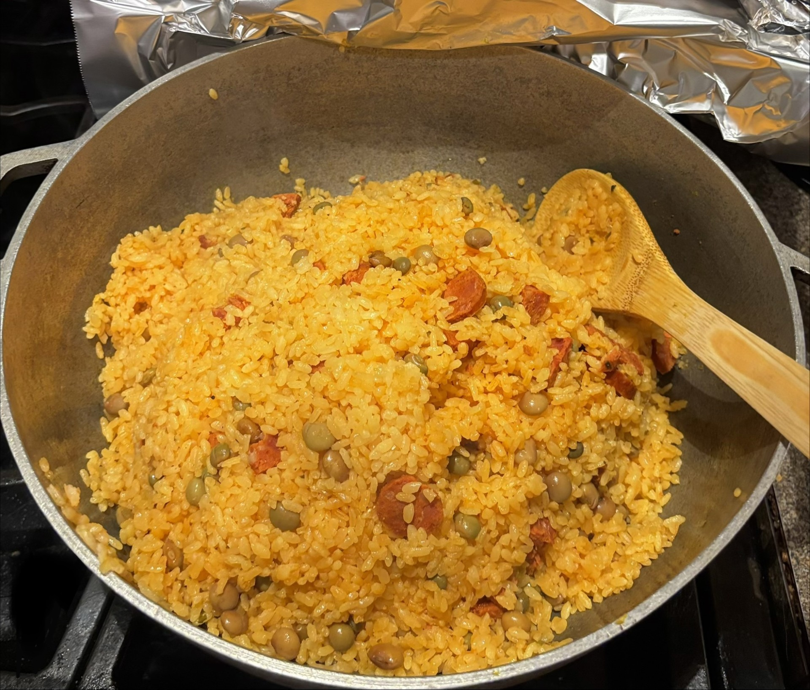
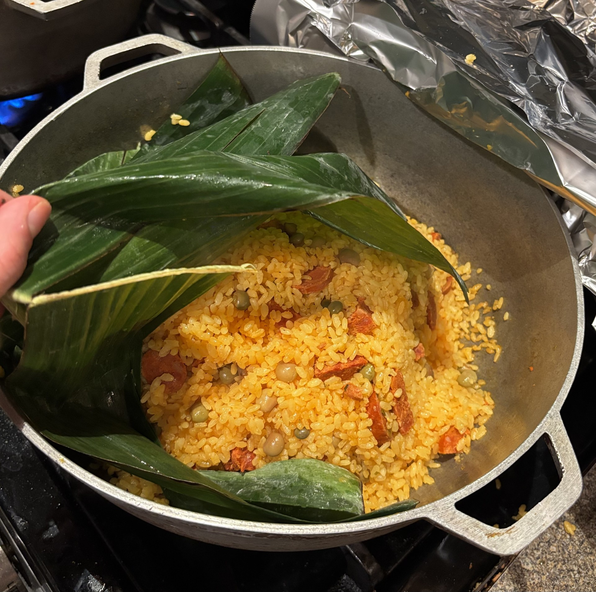

| Home | Pernil | Arroz Con Gandules | Potato Salad |
|---|
|  |
 |
Arroz con Gandules is known to be the national dish of Puerto Rico. If you ever get to try this soft and flavorful delicacy, you will find that each Puerto Rican home has their own recipie. The traditional way to prepare this dish is to simmer the oil, add in seasoning with meat of choice, then add in water or chicken broth, and finally add in the rice and cook. This traditional way of preparing arroz con gandules can often be tricky and hard to prepare. In this recipie, I offer you insight into my family's way of cooking arroz con gandules which is simple, easy, and delicious!
| What to know before you cook: |
|---|
|
| Ingredients: | Steps: |
|---|---|
|
|
*All seasonings are to taste
|  |
|
 |